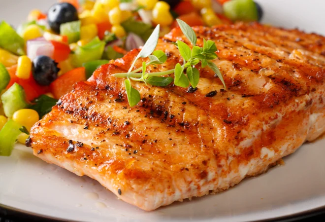

Receita de Salmão Grelhado

Descrição:
O Salmão Grelhado é uma opção saudável e saborosa, ideal para quem busca
uma refeição leve e nutritiva. Com um sabor marcante e uma textura
delicada, o salmão é temperado com ingredientes simples que realçam seu
sabor natural. Geralmente acompanhado de legumes grelhados ou uma salada
fresca, é um prato versátil que pode ser adaptado a diferentes gostos e
dietas.
Ingredientes:
Salmão
- 2 filés de salmão
- Suco de 1 limão
- Sal e pimenta-do-reino a gosto
- Azeite de oliva para grelhar
Para acompanhar
- Legumes grelhados (como abobrinha, cenoura e pimentão)
- Salada verde
Modo de preparo:
-
Tempere os filés de salmão com sal, pimenta-do-reino e suco de limão.
- Em uma frigideira antiaderente, aqueça um fio de azeite de oliva.
-
Grelhe o salmão por aproximadamente 3-4 minutos de cada lado, ou até que
esteja dourado e cozido ao ponto.
- Sirva o salmão com legumes grelhados ou uma salada verde.